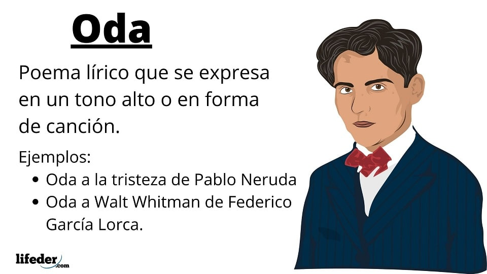

La oda es un poema lírico y una composición poética de tono elevado o cantado, que trata asuntos diversos entre los que se recoge una reflexión del poeta. Según el tema que se trata, puede ser religiosa, heroica, filosófica o amorosa.
En general se aplica a todo poema destinado a ser cantado.
ESTOS SON EJEMPLOS:
 REGRESAR A PAGINA PRINCIPAL.
ODA A LA TRISTEZA POR PABLO NERUDA